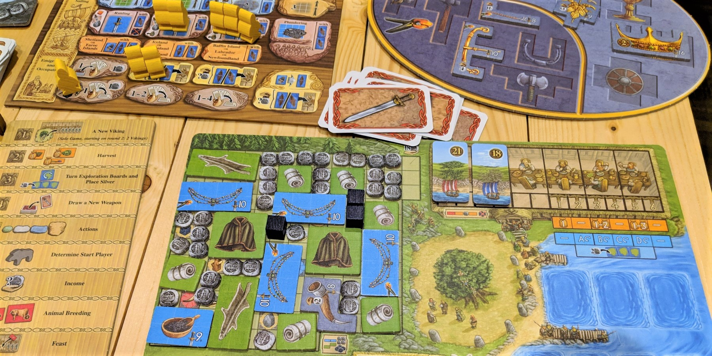
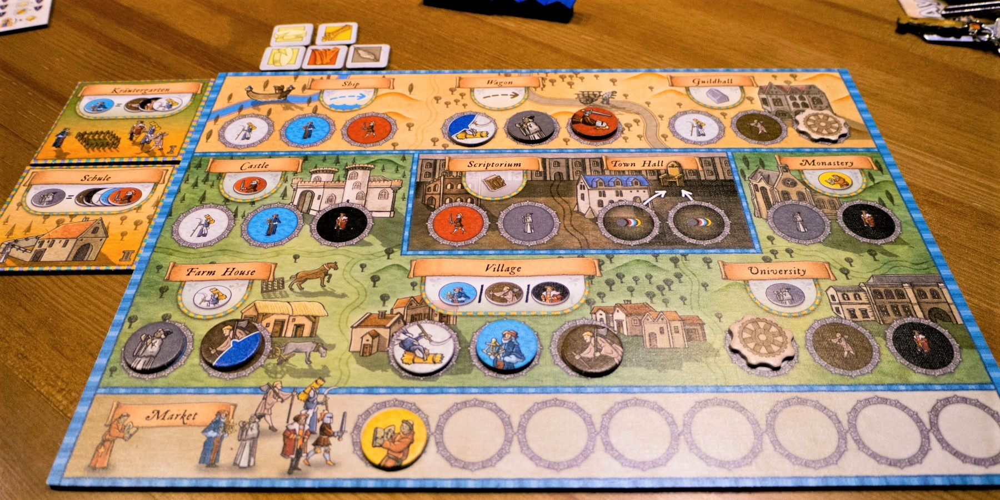
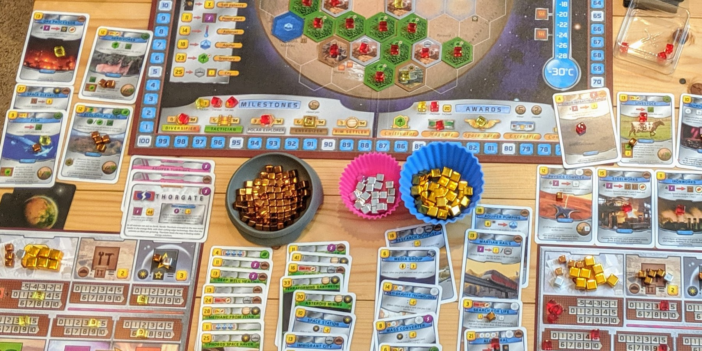

If you like Agricola, try these 3 games


Agricola is a beloved worker placement game with high replay value from its numerous project and occupation cards. The way you score points is simple at its core, but there are always new strategies to pursue.
Agricola remains a gold standard for Euro games, and many games have built on its concepts. We’re recommending games that add new mechanics but require you to strategize at a similar level.
A Feast for Odin

A Feast for Odin is a Viking-themed worker placement game with an epic block puzzle system. This game is also by Uwe Rosenberg, the designer of Agricola, and it has a lot of similar challenges and satisfying moments.
You send workers to spaces on the board to mine resources, construct boats and buildings, and hunt or raise animals. Most spaces yield tiles of various shapes and sizes that you add to your personal boards in a Tetris mini-game. Filling more of your board amps up your income and good production, which you get each round. The tricky part is that only green and blue goods can be placed on your main board, and green goods can’t be placed next to each other!
You have more workers available than in Agricola, but each space requires you to send 1 to 4 workers, depending on how good the action is. There are also occupation cards that give bonuses, but you get to draw and play these only when you use a 3- or 4-worker space.
Despite being a complex game that takes longer to play, the puzzle aspect keeps everyone engaged between turns, as goods don’t need to be placed immediately. It also plays very well 2-player which is a huge plus for complex games like this!
Buy A Feast for Odin on Amazon
Orléans
Orléans is a medieval-themed worker placement game that uses “bag-building” - similar to deck-building, but with tokens instead of cards. You also place workers on your own board, rather than competing for spaces on a common board like in Agricola.
On your turn, you pull 4 random workers out of your bag and assign them to action spaces on your board, each of which requires specific workers to activate. Many spaces let you add new workers to your bag, and you’ll be able to activate more advanced actions as your bag grows. You have to be strategic about the contents of your bag, as you want to avoid a turn where you can’t use the workers you pulled!
When you gain a worker, you also advance up a corresponding track and gain a benefit. The Military track increases the number of workers you pull from your bag, while the Builder track lets you construct buildings that provide helpful abilities or new action spaces.
Orléans will get your brain working just as hard as Agricola does. It has less player interaction, but that lets you focus on optimizing your bag. The random chance of the bag also adds fun chaos to an otherwise complex game!
Buy Orléans on Amazon
Terraforming Mars
Terraforming Mars is a deep card game where you and your opponents develop Mars into a habitable planet. If you love coming up with a grand plan to use every card in your hand like in Agricola, this game takes that to the max.
Everything you do is driven by the cards you play throughout the game. Cards can boost your resource production, place tiles on the planet’s surface, or let you grow microbes and raise animals. All of these avenues can score points, and you’ll need to figure out the most efficient way to use your cards.
Many actions raise the planet’s temperature, oxygen level, and ocean coverage, and when all of these these parameters are maxed, the game ends. This creates an interesting element of player interaction, as a player can try to rush or prolong the game based on what rewards their strategy.
One of the best things about Terraforming Mars is that it’s actually straightforward to learn despite having a high strategy ceiling. Everything is explicitly outlined by the cards, and this can make it surprisingly easy to teach people who have played only a handful of games.
Buy Terraforming Mars on Amazon
Honorable Mentions
Dune: Imperium is a deck-building game with a thematic worker-placement board, and it features a race to 10 points. Points are rare, but the ways to score them are available to everyone - win combats, buy expensive point cards, or gain Influence with the four factions. Everyone starts with the same deck rather than drafting your hand like in Agricola, but you can gain new cards each turn. Cards are used in two ways - you can play one to send a worker to a matching space, or you can keep it in your hand to gain a bonus. However, you have to get creative if the cards you draw are not what you hoped for!
Buy Dune: Imperium on AmazonBohnanza is all about trading beans to score the most points. This is Uwe Rosenberg’s first game, and it’s an entirely different type of game in contrast to Agricola. You plant various beans in your fields - Blue Beans, Black-eyed Beans, Chili Beans, or even Wax Beans! When it’s your turn, you can negotiate with other players and trade for more beans of one kind - “does anyone have Chili Beans? I’ve got 2 Stink beans to give away!” You earn more money when you sell multiple beans of one type, so you’ve got to try to get the largest set possible!
Buy Bohnanza on AmazonExcalibohn is the follow-up game to Bohnanza, and it adds MAGIC! Beans have special powers that help you get better beans or attack your opponents. We think this one is slightly more strategic, but both games are a ton of fun!
Buy Excalibohn on AmazonCaverna is another Rosenberg game that is like Agricola but less punishing. You just get more stuff which makes the experience more enjoyable for a wider audience, though it has just as much complexity.
Buy Caverna on AmazonDid we miss any good recommendations? Have other feedback for us? Send us an email at support@spiralburst.com and let us know!